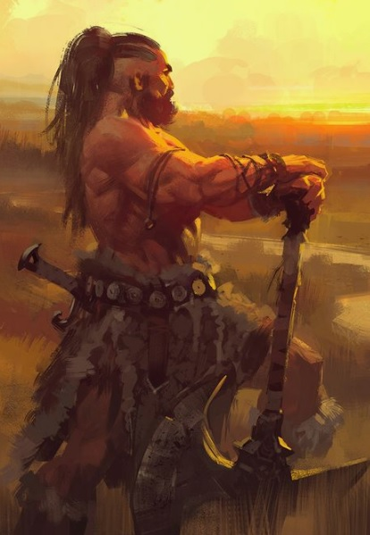

Savaşçılar büyü sanatından yoksun olmalarından gelen eksikliği bileklerinin gücüyle tamamlarlar. Güç, çeviklik ve bünye bu sınıf için çok önemlidir.
O nedenle ırk seçiminde bu özelliklere dikkat edilmelidir.
Seviye 1
Balta: Balta kullanabilme yeteneğidir.Hançer: Hançer kullanabilme yeteneğidir.
Döven: Döven kullanabilme yeteneğidir.
Topuz: Topuz kullanabilme yeteneğidir.
Teber: Teber kullanabilme yeteneğidir.
Kalkan bloğu: Kurbanın saldırısını kalkanla karşılamak için geliştirilen yetenek. (otomatik)
Mızrak: Mızrak kullanabilme yeteneğidir.
Kılıç: Kılıç kullanabilme yeteneğidir.
Kırbaç: Kırbaç kullanabilme yeteneğidir.
Omuz: Hasar vermeyi ve düşürmeyi hedefleyen yetenek. Çok etkilidir.Muhakkak pratik edilmesi gerekir. Omuz yiyen karakter 2 tur boyunca yerden kalkamaz ve büyü yapamaz. Omuz atan karakter 2 tur boyunca otomatik dövüşmekten başka birşey yapamaz. Omuz atmaya çalışan kişi yere düşebilir. Uçanlara, çeviklere omuz atmak zordur. Yapılı ve ağır birine omuz atmak bir binaya omuz atmaya benzeyebilir. (omuz
Kapıkırma: Belirtilen yöndeki kapıyı (veya belirtilen isimdeki kapıyı)omuz atarak kırmayı hedefleyen yetenek. (kapıkır
Karşılama: Kurbanın saldırısını silahla karşılamak için kullanılan yetenek.
(otomatik)Anımsa: Ait olduğunun dinin tapınağına dönüş komutudur. Seviye 10a kadar geçerlidir. (anımsa)
Kurtar: Dövüş sırasında eğer darbelere maruz kalıyorsanız başka bir karakter sizi kurtararak göğsünü siper edebilir. Bu noktada size vuran mobil ya da karakter sizi kurtarana vurmaya başlar.(kurtar
Seviye 3
Yüksek zarar: Kurbana verilen zararı artırmayı sağlayan yetenek. (otomatik)Seviye 5
Tekme: Savaşçıların hedeflerine güçlü bir tekme atma yetenekleri. Düşmana geçikme verir.(tekme)Seviye 6
Hızlı iyileşme: Yaşam puanının daha hızlı yenilenmesini sağlayan yetenek. Bu yetenek yürürken de, dinlenirken de, uyurken de çalışır.(otomatik)Seviye 8
Toz atma: Yerdeki tozu-kumu seri bir ayak darbesiyle havalandırarak rakibin gözlerine atmayı hedefleyen, rakibi kısa süreliğine körleştiren yetenek. (toz)Seviye 9
Çıplak el: Silahsızken de etkili dövüşebilmeyi sağlayan yetenek. (otomatik)Seviye 10
İkili hamle: Dövüşlerde bir turda iki hamle yapabilmek için gerekli yetenek. (otomatik)Seviye 13
Kör dövüşü: Karakterin gözleri görmüyorken de dövüşebilmesini sağlayan yetenek. (otomatik)Sıyrılma: Saldırının vuracağı noktadan ayrılma prensibine dayanan tekniktir.Hem saldıran hem de sıyrılmayı deneyen için çeviklik değeri çok önemlidir.Savaşçılar sıyrılma yeteneğinin ustalarıdırlar.(otomatik)
Seviye 14
Pazarlık: Alışverişlerde alırken ucuza alma, satarken pahalıya satma yeteneğidir. Bu yetenek kullanılarak dükkan sahibi fiyat konusunda ikna edilmeye çalışılır. Hırsızlar pazarlık konusunda doğuştan yeteneklidirler. (otomatik)Seviye 15
Meditasyon: Hızlı iyileşmeye benzer. Yöntem olarak uyurken veya dinlenirken zihin yoğunlaşması kullanılır ve büyü gücünün (mana) yenilenmesi sağlanır. (otomatik)Seviye 18
Vahşileşme: Vuruş ve zarar zarlarını yükselten, zırhı ise düşüren bir yetenek. (vahşileş)Seviye 19
Üçlü hamle: Dövüşlerde bir turda üç hamle yapabilme yeteneği. (otomatik)Seviye 20
Silahsızlandır: Rakibin silahını saldırı esnasında yere düşürme yeteneğidir. (silahsızlandır)Seviye 21
İrfan: Bilgelik vasıtasıyla herhangi bir eşyanın niteliklerini öğrenme yeteneğidir. Tanımlama büyüsüne benzer. (irfanSeviye 23
İkinci silah: İki silahı aynı anda (verimli şekilde) kullanabilmek için geliştirilen yetenek.(otomatik)Seviye 25
Çelme: Rakibin bacaklarına hızlı bir vuruş yapılarak onu yere çalmayı amaçlayan yetenek. Başarılı bir çelmenin ardından rakip yere düşer ve 2 tur boyunca kalkamaz. Yere düşen kişinin dövüş becerisi kısmen azalır ve kaçması önlenir. İri cüsseli canlıları yere çalmak kolay olmaz, çevik canlılar ise çelme hamlesini kimi zaman kolayca savuşturabilirler. (çelme)Seviye 26
Kalkan yarma: Dövüş sırasında rakibin kalkanını yarmak için kullanılır. (kalkan yarma)Seviye 28
Kontra: Yapılan saldırıya kontra bir saldırıyla cevap vermek için geliştirilen yetenek. (otomatik)Seviye 29
Silah yarma: Dövüş sırasında rakibin silahını yarma yeteneği. (silah yarma)Seviye 30
Dörtlü hamle: Dövüşlerde bir turda 4 hamle yapabilmek için gerekli yetenek. (otomatik)Seviye 31
Çapraz blok: Kurbanın saldırısını çapraz blokla karşılayabilmek için gerekli yetenek. (otomatik)Nara: Karakterin nara atarak kendini kutsamasını sağlayan yetenek. Büyüye karşı korumayı ve vuruş zarını arttırır.(nara)
Seviye 43
Kavrama: Silahın kabzasını sıkıcı kavrayarak, silahsızlandırmayı engelleyen yetenek.(otomatik)Seviye 44
Yay: Yay kullanma yeteneğidir. (otomatik)Seviye 50
Demirci: Hasar görmüş eşyayı onarmaya yarayan yetenek. (onarSeviye 52
İkincil hamle: Bir silahla iki vuruş yapabilmeyi sağlayan yetenek. (otomatik)Beşli hamle: Dövüşlerde bir turda beş hamle yapabilmeyi sağlayan yetenek.
(otomatik)Seviye 59
Konsantrasyon: Sıradaki dövüşe konsantre olmayı sağlayan yetenek. Hasar ve zarar zarlarını arttırır. (konsantrasyon)Seviye 73
Alan saldırısı: Aynı anda birçok kişiyle dövüşebilmeyi sağlayan yetenek. (otomatik)